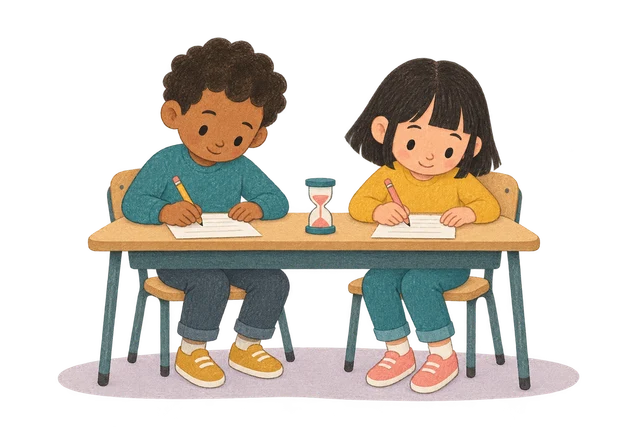
Target audience
Primary students.
Children following a timed classroom activity. The countdown should be easy to read; animation should support it, not compete with it.
ClickView / Motion design & production
45 classroom timers for ClickView.
Original illustration, AI-generated motion and custom production tools.
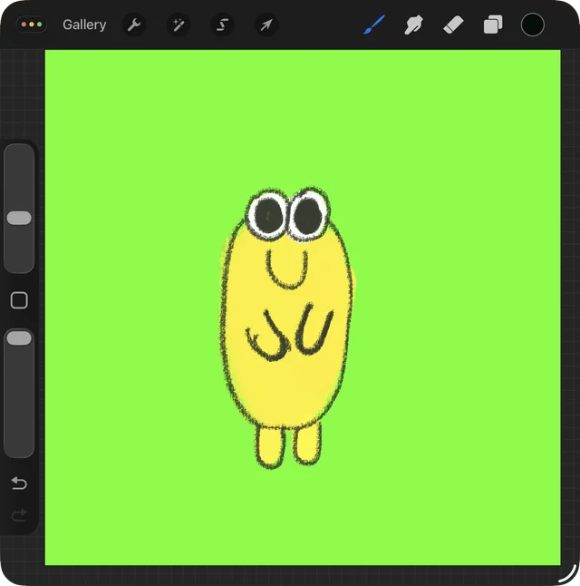
Character illustration.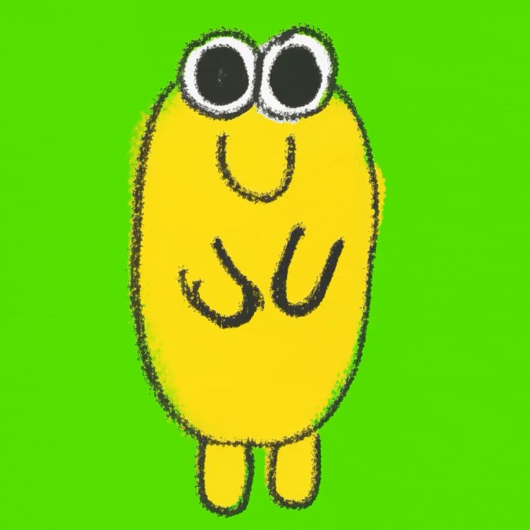
Preview unavailable. Still image shown.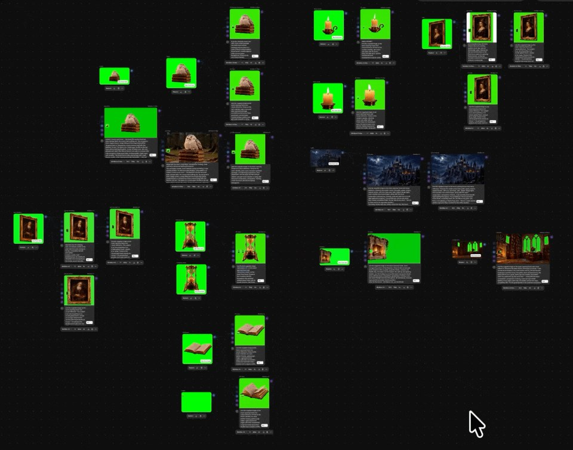
Preview unavailable. Still image shown.Preserve the character.
Limit movement.
Fix the camera.
Project context / ClickView, Australia
ClickView is an educational video platform used by Australian schools. It provides teachers with curriculum-aligned videos and teaching resources.
About ClickView for primary teachers (opens in a new tab)
Target audience
Children following a timed classroom activity. The countdown should be easy to read; animation should support it, not compete with it.
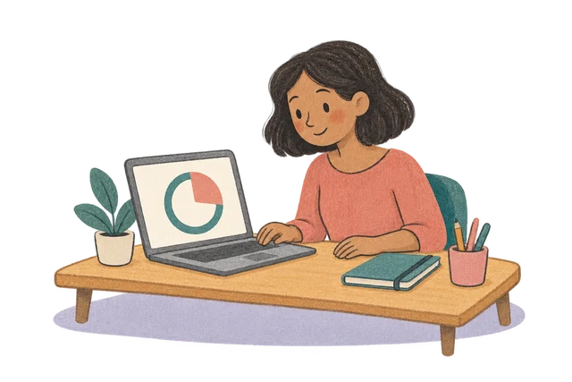
Classroom use
Teachers select a duration for transitions, independent work or focused classroom tasks.
Design priorities
AI-generated audience illustrations.
Key findings
What changed through testing.
Set composition, palette and character before generating motion.
Rejected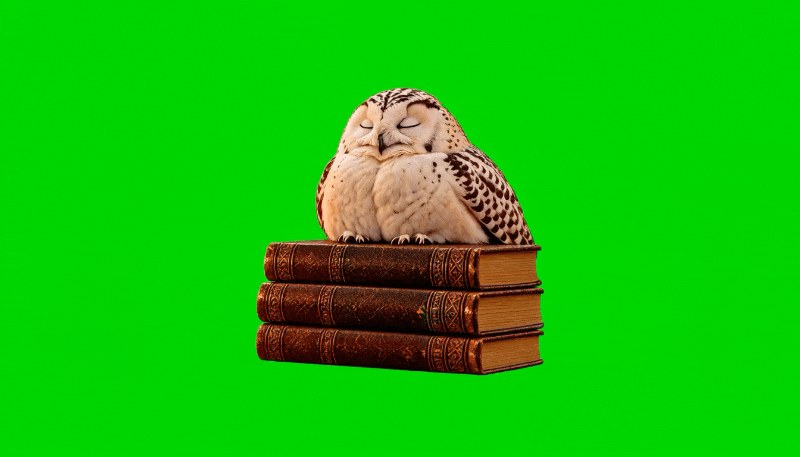
SelectedGeneration → evaluationUse rejected outputs to refine framing, object consistency and movement.
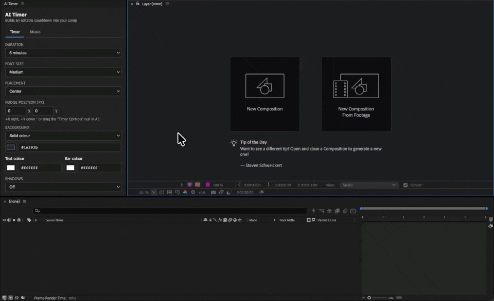
Prototype → workflowAutomate timer setup while keeping design decisions editable.
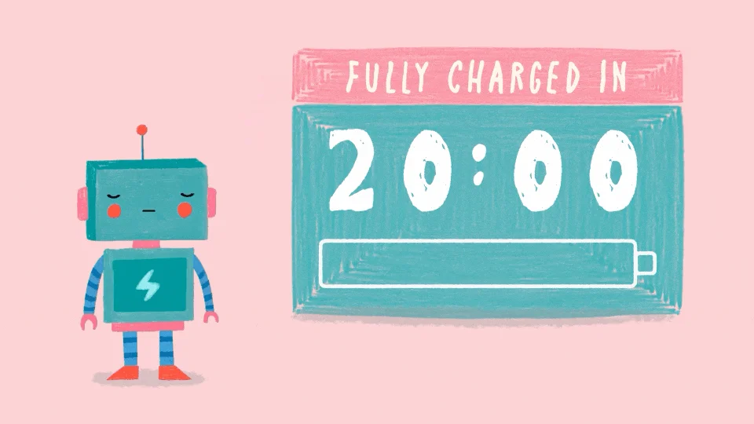
Base loop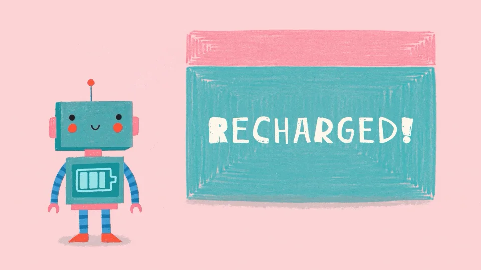
CompletionClip → sequenceCombine loops and timed events instead of generating the full duration.
My role Concept · Visual design · Motion · AI experimentation · Production
01 Production brief
Each timer required artwork, animation, audio and export. I mapped these stages, then tested where AI and custom tools could reduce repetition without limiting visual control.
Develop concepts.
AI testedCreate visual assets.
AI testedGenerate and review motion.
AI testedDevelop music and sound.
AI testedAssemble and render.
Final assemblyObjectiveReduce repeated work. Retain control over the final design.
02 Character motion
I drew the character in Procreate, tested AI motion against the reference, then composited the selected animation in After Effects.
Establish shape, palette and proportions.
Evaluate movement and consistency with the reference.
Combine the character, countdown and background.
FindingDefine what can move—and what must remain consistent.
03 Generation review
Owl generations introduced unwanted changes to the background, framing and objects. I revised the direction after each review, prioritising stable composition and restrained movement.
Review criteria: consistent framing, object count and motion.
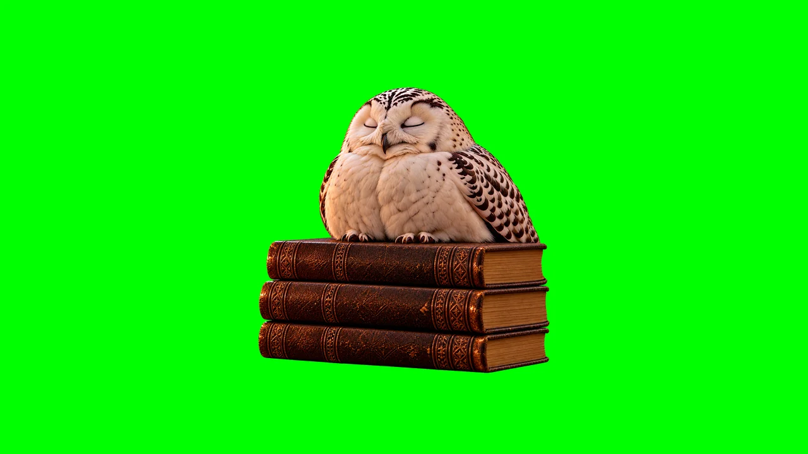
Preserve the owl, book stack and framing while adding movement.
An unwanted forest appeared and the framing shifted.
Extra books appeared and movement remained unstable.
The composition remained close to the reference, with restrained movement suitable for compositing.
RunwayML / Node-based workflow
Reference images connect to generation nodes. Motion instructions guide each test; the canvas keeps variants available for comparison.
This recording is unavailable. The process and stills remain visible below.
Use the source image to define character, objects and framing.
For the owl: limited movement, fixed camera, consistent objects.
Direction summary, not a verbatim prompt.Review variants and assemble selected motion in After Effects.
Candle, hourglass and book tests show how individual elements contribute to the final library composition.
Candlelight adds a small animated detail.
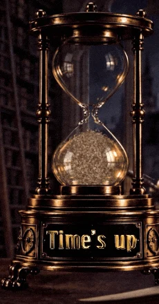
The hourglass establishes the central focal point.
The open book adds a foreground layer.
Canvas and final-scene crops. Development candidates are not exact matches for every selected asset.
Selected motion and separate elements assembled into the library timer.
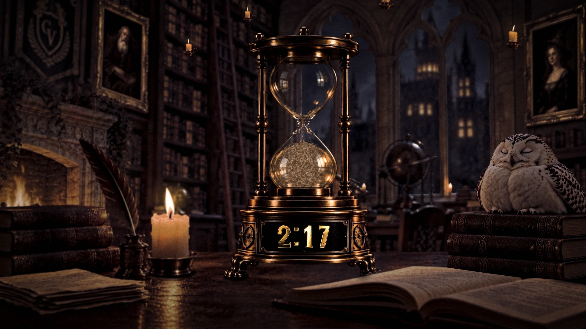
Preview unavailable. Still image shown.Finding / Evaluate generated motion in the final composition, not in isolation.
04 Production tools
In parallel, I tested two approaches to timer setup: a browser generator and an After Effects tool. The second reduced repetition within an editable design workflow.
Test 01 / Browser prototype
Using Claude, I built a browser tool to generate and export 16:9 timers. It worked, but offered limited control over typography, animation and effects.
This recording is unavailable. The process and stills remain visible below.
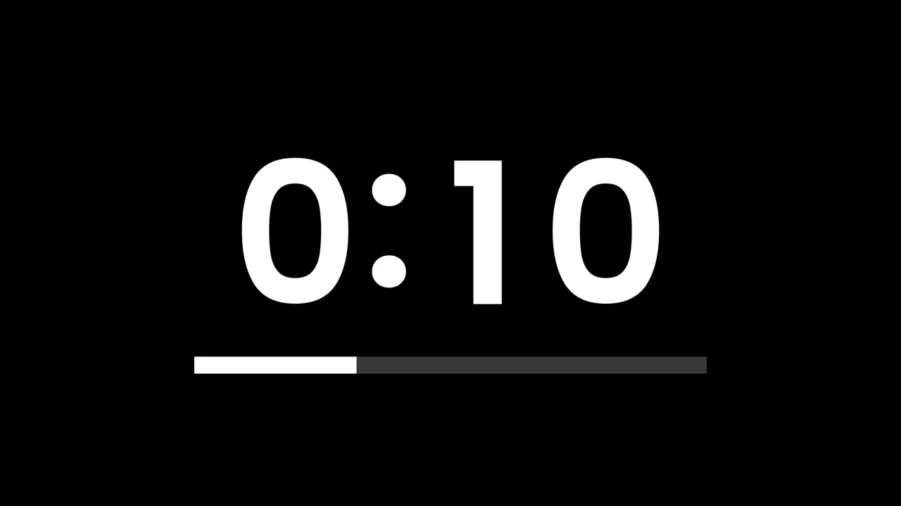
Functional countdown with limited visual customisation.
FindingEnd-to-end generation restricted design flexibility.
Test 02 / After Effects tool
I moved setup into After Effects. The tool generates the timer structure; typography, colour, animation and effects remain editable.
This recording is unavailable. The process and stills remain visible below.
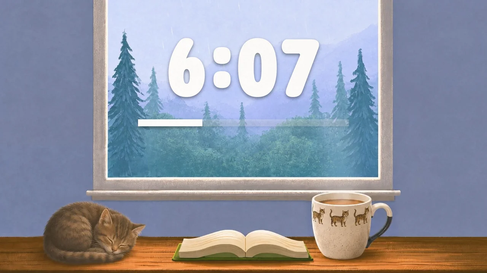
Manually designed scene and typography; not a one-click transformation.
FindingAutomated structure preserved creative flexibility.
PrincipleAutomate repeated setup, not the visual decisions.
05 Sequence design
The generated clips lasted seconds; the timers needed minutes. I combined reusable loops with timed events instead of generating the full duration.
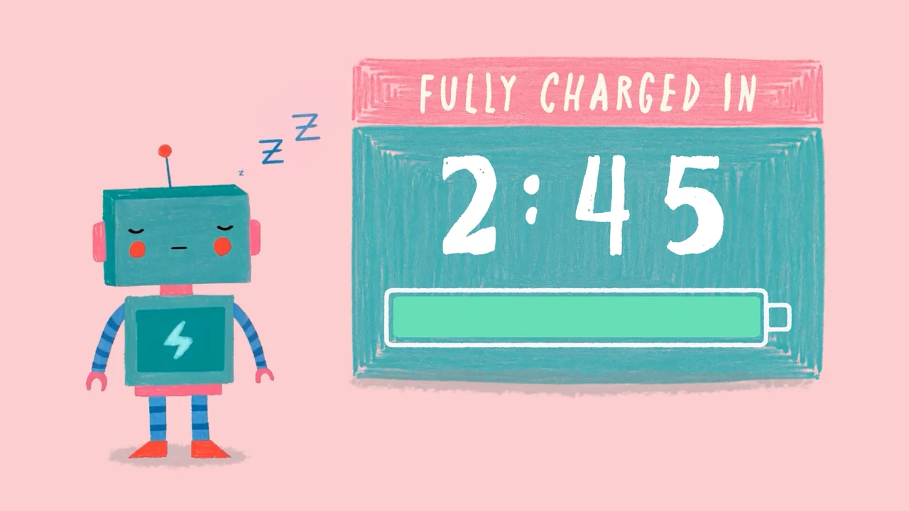
Preview unavailable. Still image shown.Method / Layered animation
A sleeping loop forms the base. Dream doodles and character movements add variation; the wake-up signals completion.
Timing and repetition are controlled in the edit.
Sleeping character and empty battery establish the starting state.
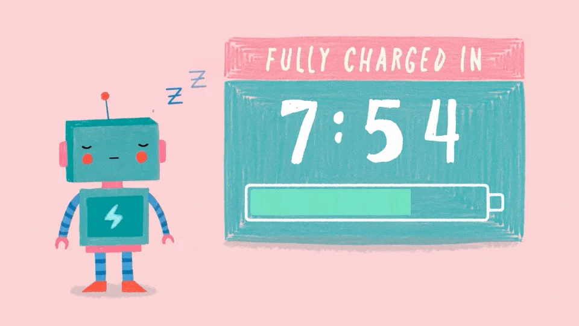
Head movement and sleep marks vary the loop as the battery fills.
Open eyes and a full battery signal completion.
Final-animation frames. The diagram below shows the layer structure.
06 Tool selection
Tool selection varied by asset type. These examples combine illustration, image generation, code-assisted animation and manual compositing.
Original illustration
Procreate artwork, AI-generated motion and After Effects compositing.
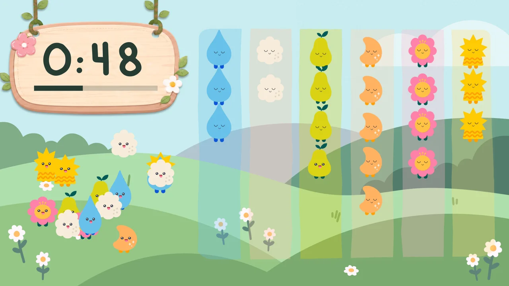
Illustrated assets
Photoshop and Illustrator assets with Claude-assisted animation and After Effects assembly.
Generated scenes
Generated imagery and selected motion composited into a single scene.
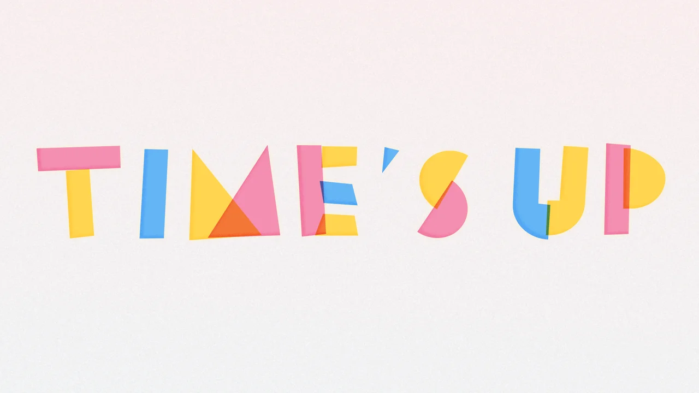
Typography & motion
Illustrator lettering animated in After Effects, with AI-generated music.
AssemblyDifferent asset workflows. Final composition in After Effects.
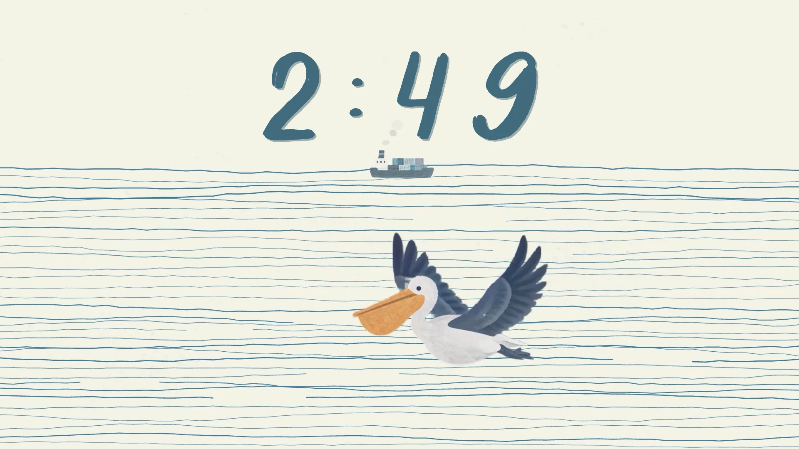
Alternative visual treatment
Simple linework and a muted palette offer a quieter alternative within the collection.
07 Collection
Reusable setup supports distinct visual treatments, selected motion and controlled pacing across the collection.
This recording is unavailable. The process and stills remain visible below.
Process reel
A short edit connecting source artwork, motion tests and final timers.
Show artwork → green-screen motion → node tests → final scenes. End on “Time’s up”, with finished music and sound.
16:9 · 1920 × 1080 or higher · MP4Conclusion
Testing clarified the division of work:
automated setup, directed generation
and manual control over the final composition.
Automate the repeated setup.
Evaluate against the reference.
Retain editable compositions.